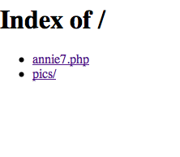

iVIREON - identification of VIRions by Ensembles of Neural networks
Ever feel like there are too many viruses in the world? Don't you wish you could just predict an unknown viral protein's function?
iVIREON is here to help! Unlike messy sequence alignment programs, iVIREON utilizes trained Artificial Neural Networks to recognize the
amino acid percent compositions and isoelectric values of your proteins! If it's similar to sequences the ANNs have seen before, they'll predict its function!
It's THAT easy!
Try iVIREON today, FREE!
Warning: iVIREON will not be held responsible for lost or damaged sequences, nor sequences which gain sentience and make others feel jealous and inanimate.
Download iVIREON
HERE!
Instructions:
Step 1: MAMP
MAMP is a set of software, which allows you to run web-pages from your machine. This interface utilizes web-pages and programs to use the ANN software.
First, download, install, and run MAMP on your machine. The software can be found at this location Here!
Make sure to click "start servers", and wait for the light next to "Apache Server" to turn green. (the machine will see itself as a server).

Next, find the MAMP directory on your machine; it may be in the "Applications" directory, and should look like this:

Replace the "htdocs" and "cgi-bin" directories with those found in the ANNIE packet (drag those folders from the packet to the MAMP folder, and click "Replace".
Finally, open a web-browser, and try to go to: http://localhost/
It will hopefully look like this:

Click "iVIR.php"